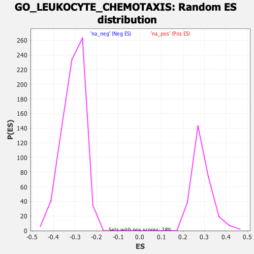

| | | Dataset | DE_genes |
| Phenotype | NoPhenotypeAvailable |
| Upregulated in class | na_pos |
| GeneSet | GO_LEUKOCYTE_CHEMOTAXIS |
| Enrichment Score (ES) | 0.7263277 |
| Normalized Enrichment Score (NES) | 2.5291898 |
| Nominal p-value | 0.0 |
| FDR q-value | 0.0 |
| FWER p-Value | 0.0 |
Table: GSEA Results Summary
 Fig 1: Enrichment plot: GO_LEUKOCYTE_CHEMOTAXIS
Fig 1: Enrichment plot: GO_LEUKOCYTE_CHEMOTAXIS
Profile of the Running ES Score & Positions of GeneSet Members on the Rank Ordered List
| PROBE | GENE SYMBOL | GENE_TITLE | RANK IN GENE LIST | RANK METRIC SCORE | RUNNING ES | CORE ENRICHMENT | | 1 | FFAR2 | | | 5 | 16.499 | 0.0489 | Yes |
| 2 | CCL8 | | | 7 | 15.196 | 0.0941 | Yes |
| 3 | FCER1G | | | 8 | 15.109 | 0.1391 | Yes |
| 4 | CCL4 | | | 9 | 14.658 | 0.1828 | Yes |
| 5 | STAP1 | | | 10 | 14.208 | 0.2252 | Yes |
| 6 | CCL11 | | | 22 | 11.788 | 0.2596 | Yes |
| 7 | CYP19A1 | | | 25 | 11.498 | 0.2938 | Yes |
| 8 | S100A12 | | | 35 | 9.970 | 0.3229 | Yes |
| 9 | IL1RN | | | 39 | 9.443 | 0.3508 | Yes |
| 10 | CCL7 | | | 70 | 7.435 | 0.3710 | Yes |
| 11 | PADI2 | | | 71 | 7.411 | 0.3931 | Yes |
| 12 | CXCL10 | | | 86 | 6.536 | 0.4117 | Yes |
| 13 | CSF3R | | | 95 | 6.260 | 0.4298 | Yes |
| 14 | S100A8 | | | 96 | 6.252 | 0.4485 | Yes |
| 15 | CCL19 | | | 99 | 6.189 | 0.4668 | Yes |
| 16 | TNFSF14 | | | 125 | 5.540 | 0.4817 | Yes |
| 17 | CCL3 | | | 130 | 5.365 | 0.4974 | Yes |
| 18 | PTK2B | | | 140 | 5.170 | 0.5122 | Yes |
| 19 | RAC2 | | | 142 | 5.131 | 0.5275 | Yes |
| 20 | C3AR1 | | | 143 | 5.080 | 0.5426 | Yes |
| 21 | S100A9 | | | 156 | 4.688 | 0.5558 | Yes |
| 22 | LGALS9 | | | 173 | 4.398 | 0.5679 | Yes |
| 23 | CCR1 | | | 175 | 4.383 | 0.5809 | Yes |
| 24 | CXCL17 | | | 185 | 4.153 | 0.5926 | Yes |
| 25 | CCL18 | | | 201 | 3.823 | 0.6031 | Yes |
| 26 | CXCL16 | | | 207 | 3.734 | 0.6139 | Yes |
| 27 | CYP7B1 | | | 247 | 3.316 | 0.6212 | Yes |
| 28 | IL1A | | | 261 | 3.130 | 0.6297 | Yes |
| 29 | CCL2 | | | 284 | 2.886 | 0.6368 | Yes |
| 30 | LYN | | | 293 | 2.839 | 0.6448 | Yes |
| 31 | CXCL11 | | | 310 | 2.681 | 0.6517 | Yes |
| 32 | SAA1 | | | 314 | 2.654 | 0.6594 | Yes |
| 33 | C5AR1 | | | 321 | 2.626 | 0.6669 | Yes |
| 34 | CD74 | | | 335 | 2.553 | 0.6736 | Yes |
| 35 | IL1B | | | 343 | 2.495 | 0.6806 | Yes |
| 36 | FPR2 | | | 349 | 2.445 | 0.6876 | Yes |
| 37 | PDE4B | | | 360 | 2.392 | 0.6941 | Yes |
| 38 | GPSM3 | | | 397 | 2.219 | 0.6983 | Yes |
| 39 | LBP | | | 411 | 2.115 | 0.7038 | Yes |
| 40 | CKLF | | | 412 | 2.111 | 0.7101 | Yes |
| 41 | CXCL6 | | | 421 | 2.072 | 0.7157 | Yes |
| 42 | CXCR2 | | | 429 | 2.008 | 0.7212 | Yes |
| 43 | PLA2G7 | | | 442 | 1.968 | 0.7263 | Yes |
| 44 | BST1 | | | 547 | 1.591 | 0.7243 | No |
| 45 | CALR | | | 683 | 1.308 | 0.7193 | No |
| 46 | MDK | | | 712 | 1.255 | 0.7212 | No |
| 47 | GPR18 | | | 721 | 1.239 | 0.7244 | No |
| 48 | AIF1 | | | 771 | 1.159 | 0.7247 | No |
| 49 | CXCR1 | | | 903 | 0.978 | 0.7190 | No |
| 50 | DYSF | | | 907 | 0.971 | 0.7217 | No |
| 51 | CCL5 | | | 937 | 0.940 | 0.7226 | No |
| 52 | F2RL1 | | | 1052 | 0.800 | 0.7175 | No |
| 53 | ADAM8 | | | 1080 | 0.771 | 0.7181 | No |
| 54 | CXCL13 | | | 1108 | 0.748 | 0.7185 | No |
| 55 | MOSPD2 | | | 1148 | 0.719 | 0.7181 | No |
| 56 | MPP1 | | | 1182 | 0.693 | 0.7180 | No |
| 57 | SLAMF8 | | | 1216 | 0.665 | 0.7179 | No |
| 58 | WNT5A | | | 1236 | 0.653 | 0.7186 | No |
| 59 | IL10 | | | 1425 | 0.555 | 0.7079 | No |
| 60 | CCL20 | | | 1581 | 0.479 | 0.6992 | No |
| 61 | SLC12A2 | | | 1635 | 0.457 | 0.6971 | No |
| 62 | VAV1 | | | 1674 | 0.444 | 0.6959 | No |
| 63 | IL23A | | | 1699 | 0.433 | 0.6957 | No |
| 64 | VAV3 | | | 1735 | 0.413 | 0.6946 | No |
| 65 | CCL13 | | | 1770 | 0.401 | 0.6936 | No |
| 66 | IL17RA | | | 2136 | 0.285 | 0.6705 | No |
| 67 | TIRAP | | | 2141 | 0.284 | 0.6711 | No |
| 68 | MIR223 | | | 2361 | 0.230 | 0.6575 | No |
| 69 | HSD3B7 | | | 2668 | 0.181 | 0.6380 | No |
| 70 | PLA2G1B | | | 2675 | 0.180 | 0.6381 | No |
| 71 | CXCL1 | | | 2830 | 0.158 | 0.6285 | No |
| 72 | ADAM10 | | | 2845 | 0.156 | 0.6281 | No |
| 73 | CH25H | | | 2998 | 0.140 | 0.6186 | No |
| 74 | CXCL9 | | | 3057 | 0.135 | 0.6152 | No |
| 75 | IL36G | | | 3135 | 0.127 | 0.6105 | No |
| 76 | PDE4D | | | 3185 | 0.124 | 0.6077 | No |
| 77 | CXADR | | | 3257 | 0.117 | 0.6034 | No |
| 78 | THBS1 | | | 3585 | 0.093 | 0.5823 | No |
| 79 | ITGB2 | | | 3683 | 0.088 | 0.5762 | No |
| 80 | CCL26 | | | 3717 | 0.087 | 0.5743 | No |
| 81 | CAMK1D | | | 3816 | 0.081 | 0.5681 | No |
| 82 | EDN1 | | | 3846 | 0.079 | 0.5664 | No |
| 83 | PIP5K1C | | | 4064 | 0.066 | 0.5524 | No |
| 84 | MST1L | | | 4073 | 0.066 | 0.5521 | No |
| 85 | PIK3CG | | | 4110 | 0.064 | 0.5499 | No |
| 86 | MAPK14 | | | 4156 | 0.061 | 0.5472 | No |
| 87 | IL16 | | | 4376 | 0.049 | 0.5330 | No |
| 88 | DDT | | | 4450 | 0.045 | 0.5284 | No |
| 89 | CX3CL1 | | | 4512 | 0.041 | 0.5245 | No |
| 90 | EDN3 | | | 4676 | 0.033 | 0.5139 | No |
| 91 | CCL17 | | | 4682 | 0.033 | 0.5137 | No |
| 92 | IL36RN | | | 4817 | 0.025 | 0.5050 | No |
| 93 | F7 | | | 4831 | 0.025 | 0.5042 | No |
| 94 | CCL24 | | | 4863 | 0.023 | 0.5023 | No |
| 95 | CCR6 | | | 4889 | 0.022 | 0.5007 | No |
| 96 | RAC1 | | | 5105 | 0.011 | 0.4867 | No |
| 97 | CCL22 | | | 5136 | 0.010 | 0.4847 | No |
| 98 | CORO1A | | | 5665 | -0.019 | 0.4502 | No |
| 99 | ZNF580 | | | 5671 | -0.019 | 0.4500 | No |
| 100 | NBL1 | | | 5734 | -0.022 | 0.4460 | No |
| 101 | AZU1 | | | 5759 | -0.024 | 0.4445 | No |
| 102 | XCL2 | | | 5760 | -0.024 | 0.4445 | No |
| 103 | CCR5 | | | 5803 | -0.026 | 0.4419 | No |
| 104 | EDN2 | | | 5810 | -0.027 | 0.4416 | No |
| 105 | CXCR4 | | | 5988 | -0.038 | 0.4301 | No |
| 106 | TRPV4 | | | 6206 | -0.053 | 0.4160 | No |
| 107 | CXCR5 | | | 6288 | -0.058 | 0.4109 | No |
| 108 | XCL1 | | | 6351 | -0.062 | 0.4070 | No |
| 109 | KIT | | | 6522 | -0.074 | 0.3961 | No |
| 110 | CCL21 | | | 6653 | -0.085 | 0.3879 | No |
| 111 | GPR183 | | | 6704 | -0.088 | 0.3849 | No |
| 112 | SYK | | | 6799 | -0.095 | 0.3790 | No |
| 113 | PF4 | | | 6861 | -0.099 | 0.3753 | No |
| 114 | CXCR3 | | | 7212 | -0.128 | 0.3528 | No |
| 115 | SERPINE1 | | | 7331 | -0.139 | 0.3455 | No |
| 116 | TNFRSF11A | | | 7347 | -0.140 | 0.3449 | No |
| 117 | CCR2 | | | 7409 | -0.145 | 0.3414 | No |
| 118 | SCG2 | | | 7456 | -0.149 | 0.3388 | No |
| 119 | ADAM17 | | | 7482 | -0.151 | 0.3376 | No |
| 120 | CALCA | | | 7533 | -0.154 | 0.3348 | No |
| 121 | ITGA1 | | | 7565 | -0.158 | 0.3333 | No |
| 122 | TRPM2 | | | 7731 | -0.173 | 0.3230 | No |
| 123 | STK39 | | | 7819 | -0.181 | 0.3178 | No |
| 124 | TMEM102 | | | 8097 | -0.208 | 0.3003 | No |
| 125 | LYST | | | 8101 | -0.208 | 0.3007 | No |
| 126 | S1PR1 | | | 8197 | -0.218 | 0.2952 | No |
| 127 | WNK1 | | | 8378 | -0.237 | 0.2841 | No |
| 128 | C5 | | | 8664 | -0.270 | 0.2663 | No |
| 129 | IL6 | | | 8782 | -0.284 | 0.2595 | No |
| 130 | PTPRO | | | 8788 | -0.285 | 0.2600 | No |
| 131 | THBS4 | | | 8826 | -0.289 | 0.2584 | No |
| 132 | PIK3CD | | | 8858 | -0.292 | 0.2573 | No |
| 133 | CREB3 | | | 9402 | -0.359 | 0.2228 | No |
| 134 | IL6R | | | 9423 | -0.362 | 0.2226 | No |
| 135 | VEGFC | | | 9439 | -0.365 | 0.2227 | No |
| 136 | MTUS1 | | | 9565 | -0.383 | 0.2156 | No |
| 137 | HRH1 | | | 9633 | -0.393 | 0.2124 | No |
| 138 | ITGA9 | | | 9761 | -0.411 | 0.2054 | No |
| 139 | TGFB2 | | | 9925 | -0.436 | 0.1960 | No |
| 140 | MST1 | | | 10031 | -0.450 | 0.1905 | No |
| 141 | SBDS | | | 10054 | -0.455 | 0.1904 | No |
| 142 | NUP85 | | | 10219 | -0.479 | 0.1811 | No |
| 143 | CXCL5 | | | 10222 | -0.480 | 0.1824 | No |
| 144 | S100A7 | | | 10455 | -0.512 | 0.1687 | No |
| 145 | HMGB1 | | | 10466 | -0.514 | 0.1696 | No |
| 146 | EDNRB | | | 10526 | -0.525 | 0.1673 | No |
| 147 | CXCL3 | | | 10593 | -0.537 | 0.1646 | No |
| 148 | VEGFB | | | 10618 | -0.540 | 0.1646 | No |
| 149 | CXCL14 | | | 10622 | -0.541 | 0.1660 | No |
| 150 | CCL23 | | | 10746 | -0.560 | 0.1597 | No |
| 151 | PREX1 | | | 10850 | -0.575 | 0.1546 | No |
| 152 | AKIRIN1 | | | 11128 | -0.621 | 0.1384 | No |
| 153 | PTN | | | 11230 | -0.642 | 0.1337 | No |
| 154 | IL12A | | | 11231 | -0.643 | 0.1356 | No |
| 155 | NCKAP1L | | | 11295 | -0.655 | 0.1334 | No |
| 156 | RPS19 | | | 11606 | -0.721 | 0.1153 | No |
| 157 | ANXA1 | | | 11745 | -0.750 | 0.1085 | No |
| 158 | CSF1 | | | 11758 | -0.753 | 0.1100 | No |
| 159 | MMP28 | | | 11761 | -0.754 | 0.1121 | No |
| 160 | OXSR1 | | | 11839 | -0.770 | 0.1093 | No |
| 161 | GBF1 | | | 11842 | -0.771 | 0.1115 | No |
| 162 | CXCL12 | | | 11856 | -0.773 | 0.1130 | No |
| 163 | SLIT2 | | | 12170 | -0.848 | 0.0950 | No |
| 164 | PDGFB | | | 12316 | -0.881 | 0.0881 | No |
| 165 | CMKLR1 | | | 12343 | -0.889 | 0.0891 | No |
| 166 | VEGFA | | | 12537 | -0.937 | 0.0793 | No |
| 167 | DAPK2 | | | 12575 | -0.945 | 0.0797 | No |
| 168 | CXCL2 | | | 12622 | -0.959 | 0.0795 | No |
| 169 | IL17RC | | | 12872 | -1.036 | 0.0663 | No |
| 170 | LGMN | | | 12897 | -1.045 | 0.0678 | No |
| 171 | MAPK3 | | | 12945 | -1.060 | 0.0679 | No |
| 172 | PPBP | | | 12965 | -1.066 | 0.0699 | No |
| 173 | GREM1 | | | 13082 | -1.101 | 0.0656 | No |
| 174 | SFTPD | | | 13207 | -1.141 | 0.0608 | No |
| 175 | TRPM4 | | | 13221 | -1.146 | 0.0634 | No |
| 176 | S100A14 | | | 13470 | -1.242 | 0.0509 | No |
| 177 | LGALS3 | | | 13580 | -1.285 | 0.0476 | No |
| 178 | FLT1 | | | 13753 | -1.361 | 0.0404 | No |
| 179 | SWAP70 | | | 13789 | -1.378 | 0.0422 | No |
| 180 | ARHGEF5 | | | 13918 | -1.433 | 0.0381 | No |
| 181 | ANO6 | | | 14092 | -1.530 | 0.0313 | No |
| 182 | CCR7 | | | 14279 | -1.650 | 0.0241 | No |
| 183 | JAM3 | | | 14586 | -1.859 | 0.0096 | No |
| 184 | DUSP1 | | | 14967 | -2.266 | -0.0085 | No |
| 185 | C1QBP | | | 15173 | -2.580 | -0.0142 | No |
| 186 | PGF | | | 15225 | -2.723 | -0.0094 | No |
| 187 | RARRES2 | | | 15437 | -4.033 | -0.0112 | No |
| 188 | GAS6 | | | 15450 | -4.487 | 0.0014 | No |
Table: GSEA details [plain text format]

Fig 2: GO_LEUKOCYTE_CHEMOTAXIS: Random ES distribution
Gene set null distribution of ES for GO_LEUKOCYTE_CHEMOTAXIS